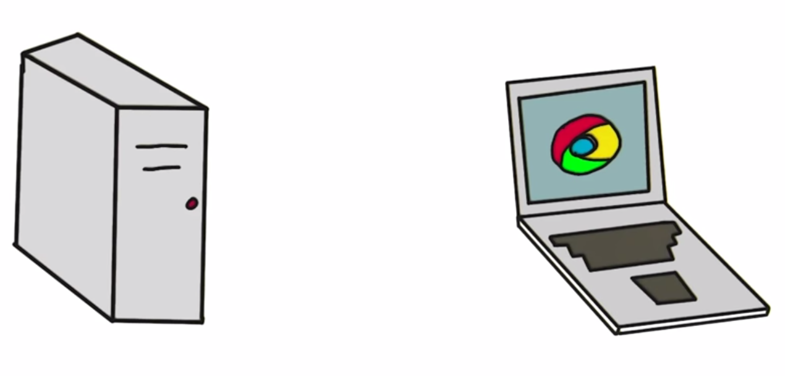

Introduction to programming using Python
Session 12
Matthieu Choplin
Objectives
- Introduction to the web and web scraping
Client Server
Computer talk to each other across the internet
Client requests information, the server is always listening
Protocols
Language of communication between computers: TCP (sure, no packet lost), UDP (for streaming), IP (to send messages to all participants), HTTP
DNS: big online phone book that will match a domain with an IP address
Ports: to communicate on specific port, first 10000 port are reserved. Common ports used: 8080
Localhost: the IP address on our machine when developing, 127.0.0.1 (not on internet)
HTTP: the language of the web
Client tells server what they want using GET (get info) and POST (modify)
return status code, images, html page...
The HTML language
- The primary language of information on the internet is the HTML
- Every webpages are written in HTML
- To see the source code of the webpage you are currently seeing, do either right click and select "View page Source". Or from the top menu of your browser, click on View and "View Source".
Example
<html><head><meta http-equiv="Content-Type"
content="text/html; charset=windows-1252">
<title>Profile: Aphrodite</title>
<link rel="stylesheet" type="text/css"></head>
<body bgcolor="yellow">
<center>
<br><br>
<img src="./Profile_ Aphrodite_files/aphrodite.gif">
<h2>Name: Aphrodite</h2>
<br><br>
Favorite animal: Dove
<br><br>
Favorite color: Red
<br><br>
Hometown: Mount Olympus
</center>
</body></html>Installing Beautifulsoup (1)

Installing Beautifulsoup (2)

Installing Beautifulsoup (3)

Using Beautiful Soup
from bs4 import BeautifulSoup
from urllib.request import urlopen
my_address = "http://mattchoplin.com/python_city/" \
"practice/Profile_Dionysus.htm"
html_page = urlopen(my_address)
html_text = html_page.read().decode('utf-8')
my_soup = BeautifulSoup(html_text, "html.parser")BeautifulSoup: get_text()
- get_text()
- is extracting only the text from an html document
- there are lot of blank lines left but we can remove them with the method replace()
- Using BeautifulSoup to extract the text first and use the find() method is sometimes easier than to use regular expressions
print(my_soup.get_text())print(my_soup.get_text().replace("\n\n\n",""))BeautifulSoup: find_all()
- find_all()
- returns a list of all elements of a particular tag given in argument
- What if the HTML page is broken?
print(my_soup.find_all("img"))BeautifulSoup: Tags
[<img src="dionysus.jpg"/>, <img src="grapes.png"><br><br>
Hometown: Mount Olympus
<br><br>
Favorite animal: Leopard <br>
<br>
Favorite Color: Wine
</br></br></br></br></br></br></img>]- This is not what we were looking for. The <img> is not properly closed therefore BeautifulSoup ends up adding a fair amount of HTML after the image tag before inserting a </img> tag on its own. This can happen with real case.
- NB: BeautifulSoup is storing HTML tags as Tag objects and we can extract information from each Tag.
BeautifulSoup: Extracting information from Tags
- Tags:
- have a name
- have attributes, accessible using keys, like when we access values of a dictionary through its keys
for tag in my_soup.find_all("img"):
print(tag.name)
print(tag['src'])BeautifulSoup: accessing a Tag through its name
- The HTML is cleaned up
- We can use the string attributes stored by the title
print(my_soup.title)print(my_soup.title.string)The select method (1)
- ... will return a list of Tag objects, which is how Beautiful Soup represents an HTML element. The list will contain one Tag object for every match in the BeautifulSoup object's HTML
The select method (2)
| Selector passed to the select method | Will match... |
|---|---|
| soup.select('div') | All elements named <div> |
| soup.select('#author') | The element with an id attribute of author |
| soup.select('.notice') | All elements that use a CSS |
| soup.select('div span') | All elements named <span> that are within an element named <div> |
| soup.select('div > span') | All elements named <span> that are directly within an element named <div>, with no other elements in between |
| soup.select('input[name]') | All elements named <input> that have a name attribute with any value |
| soup.select('input[type="button"]') | All elements named <input> that have an attribute name type with value button |
Emulating a web browser
- Sometimes we need to submit information to a web page, like a login page
- We need a web browser for that
- MechanicalSoup is an alternative to urllib that can do all the same things but has more added functionality that will allow us to talk back to webpages without using a standalone browser, perfect for fetching web pages, clicking on buttons and links, and filling out and submitting forms
Installing MechanicalSoup
- You can install it with pip: pip install MechanicalSoup or within Pycharm (like what we did earlier with BeautifulSoup)
- You might need to restart your IDE for MechanicalSoup to load and be recognised
MechanicalSoup: Opening a web page
- Create a browser
- Get a web page which is a Response object
- Access the HTML content with the soup attribute
import mechanicalsoup
my_browser = mechanicalsoup.Browser(
soup_config={'features':'html.parser'})
page = my_browser.get("http://mattchoplin.com/python_city/" \
"practice/Profile_Aphrodite.htm")
print(page.soup)MechanicalSoup: Submitting values to a form
- Have a look at this login page
- The important section is the login form
- We can see that there is a submission <form> named "login" that includes two <input> tags, one named username and the other one named password.
- The third <input> is the actual "Submit" button
MechanicalSoup: script to login
import mechanicalsoup
my_browser = mechanicalsoup.Browser(
soup_config={'features':'html.parser'})
login_page = my_browser.get(
"https://whispering-reef-69172.herokuapp.com/login")
login_html = login_page.soup
form = login_html.select("form")[0]
form.select("input")[0]["value"] = "admin"
form.select("input")[1]["value"] = "default"
profiles_page = my_browser.submit(form, login_page.url)
print(profiles_page.url)
print(profiles_page.soup)Methods in MechanicalSoup
- We created a Browser object
- We called the method get on the Browser object to get a web page
- We used the select() method to grab the form and input values in it
Interacting with the Web in Real Time
- We want to get data from a website that is constantly updated
- We actually want to simulate clicking on the "refresh" button
- We can do that with the get method of MechanicalSoup
Use case: fetching the stock quote from Yahoo finance (1)
- Let us identify what is needed
-
- What is the source of the data?
https://www.bloomberg.com/quote/YHOO:US - What do we want to extract from this source?
The stock price
- What is the source of the data?
Use case: fetching the stock quote from Yahoo finance (2)
- If we look at the source code, we can see what the tag is for the stock and how to retrieve it:
<div class="price">40.08</div>- We check that <div class="price"> only appears once in the webpage since it will be a way to identify the location of the current price
MechanicalSoup: script to find Yahoo current price
import mechanicalsoup
my_browser = mechanicalsoup.Browser()
page = my_browser.get("https://www.bloomberg.com/quote/YHOO:US")
html_text = page.soup
# return a list of all the tags where
# the css class is 'price'
my_tags = html_text.select(".price")
# take the BeautifulSoup string out of the
# first (and only) <span> tag
my_price = my_tags[0].text
print("The current price of "
"YHOO is: {}".format(my_price))Repeatedly get the Yahoo current price
- Now that we know how to get the price of a stock from the Bloomberg web page, we can create a for loop to stay up to date
- Note that we should not overload the Bloomberg website with more requests than we need. And also, we should also have a look at their robots.txt file to be sure that what we do is allowed
Introduction to the time.sleep() method
- The sleep() method of the module time takes a number of seconds as argument and waits for this number of seconds, it enables to delay the execution of a statement in the program
from time import sleep
print "I'm about to wait for five seconds..."
sleep(5)
print "Done waiting!"Repeatedly get the Yahoo current price: script
from time import sleep
import mechanicalsoup
my_browser = mechanicalsoup.Browser()
# obtain 1 stock quote per minute for the next 3 minutes
for i in range(0, 3):
page = my_browser.get("https://www.bloomberg.com/quote/YHOO:US")
html_text = page.soup
# return a list of all the tags where the class is 'price'
my_tags = html_text.select(".price")
# take the BeautifulSoup string out of the first tag
my_price = my_tags[0].text
print("The current price of YHOO is: {}".format(my_price))
if i<2: # wait a minute if this isn't the last request
sleep(60)Exercise: putting it all together
- Install a new library called requests
- Using the select method of BeautifulSoup, parse (that is, analyze and identify the parts of) the image of the day of http://xkcd.com/
- Using the get method of the requests library, download the image
- Complete the following program xkcd_incomplete.py
Using request
- You first have to import it
- If you want to download the webpage, use the get() method with a url in parameter, such as:
- Stop your program if there is an error with the raise_for_status() method
import requestsres = requests.get(url)res.raise_for_status()